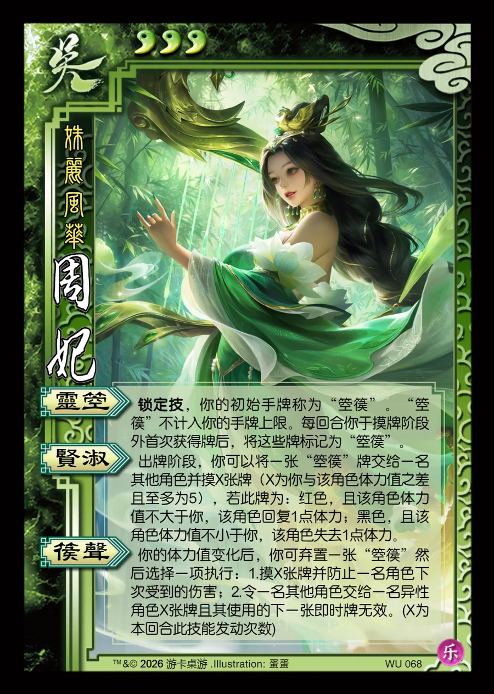

点击卡面查看大图
吴
周妃
♥3姝丽风华
灵箜锁定技
锁定技，你的初始手牌称为“箜篌”。“箜篌”不计入你的手牌上限。每回合你于摸牌阶段外首次获得牌后，将这些牌标记为“箜篌”。
贤淑
出牌阶段，你可以将一张“箜篌”牌交给一名其他角色并摸X张牌（X为你与该角色体力值之差且至多为5），若此牌为：红色，且该角色体力值不大于你，该角色回复1点体力；黑色，且该角色体力值不小于你，该角色失去1点体力。
篌声
你的体力值变化后，你可弃置一张“箜篌”然后选择一项执行：1.摸X张牌并防止一名角色下次受到的伤害；2.令一名其他角色交给一名异性角色X张牌且其使用的下一张即时牌无效。(X为本回合此技能发动次数)